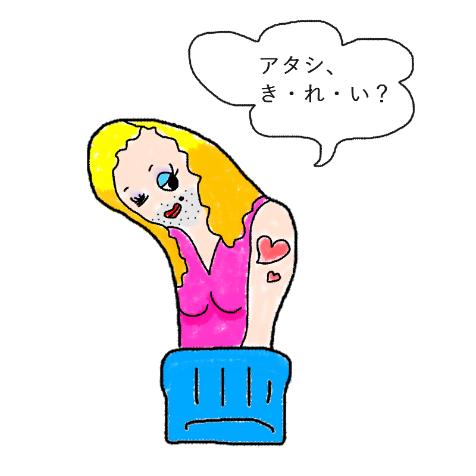

あなたの診断結果
？ ？ ？ （キャラクター名前募集中）足裏の母趾球にあく人
【すべての体重と世の荒波を一身に受け止める、
足裏界のビッグマザー＆パーフェクトヒューマン！
シースルーの穴から床を感じて
「これも人生」と微笑むオネエタイプ】

「重圧？ なにそれ美味しいの？
すべてを受け止めてこそ、いい女（男）ってもんよ……
さあ、アタシの背中に乗っかりな！」
全身の体重と衝撃をダイレクトに引き受け、修羅場を美しくいなしてきた足裏界の圧倒的マザー！
あなたは、「歩くたびに全身の体重と衝撃をダイレクトに引き受け、足元の過酷な最前線を優しく、かつ強烈な美しさで支え続けている足裏界の絶対的マザー（パーフェクトヒューマン）」です。
男の強さと女のしなやかさを合わせ持ち、どんなに重い試練や理不尽なトラブルが降りかかろうとも、「あら、この程度の負荷でへこたれるアタシじゃないわよ」と華麗にいなしてしまう圧倒的な器の持ち主。
靴下にポッカリ空いたシースルーの穴から冷たい床の感触がダイレクトに伝わってきたときでさえ、「ふっ……これもまた、人生のスパイスってやつね」と色気のあるセリフを吐いて周囲をうっとりさせます。
人生の引き出しを何十個も持っており、悩み相談をすれば極上のアドバイスをくれる一方で、夜の街や人生の荒波をすべて知り尽くしたかのような妖艶なオーラで、まわりの人間たちを片っ端から虜にしていく魅惑の存在です。
ビッグマザーの生態
- 体重の負荷がかかりすぎて穴が開きやすい場所なのに、本人はそれを「人生の勲章」とすら思っている
- トラブルが起きたときほど目が輝き、誰よりも鮮やかに解決してみせる修羅場慣れっぷり
- 「シースルーの穴から感じる床の冷たさも、愛おしいと感じる感性が大事よ」という謎の哲学がある
- 強さと優しさと色気が大渋滞しており、気付けばまわりの全員が「お母様」と呼びたくなる
自分の痛みを隠してでも、まわりの人たちを温かく包み込もうとするあなた。
その大きな器と圧倒的な存在感こそが、この退屈な日常を彩る最高のスパイスです。
（※冷たい床を感じたら、それはマダムが自然と一体化している証拠です。）
最後にひとつ。
今日も地球の重力をその足裏で優しく受け止め、
すべての悩める子羊たちを包み込んでいる慈愛のパーフェクトヒューマンよ。
その熟成された愛と美貌で、
今すぐこの退屈な世界をマダムの艶やかさに染め上げろ！
このキャラクターに名前をつける
思いついた名前を教えてね！
※このスタンプには日陰に消えたボツキャラが混ざっています
※この診断はただのお遊びです。
※靴下の穴が開く場所には個人差があります。